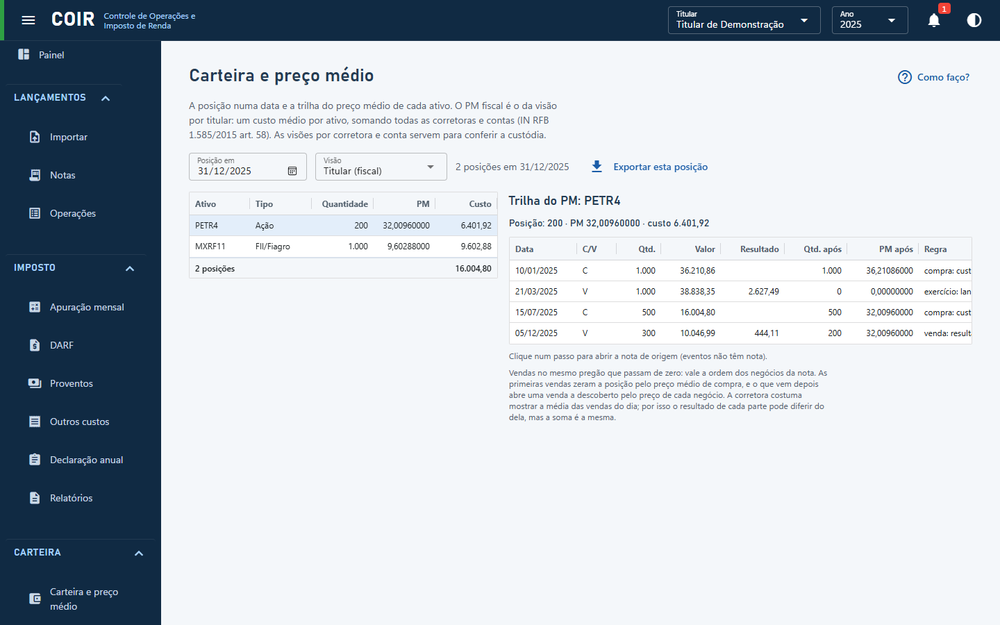

Carteira e preço médio

A posição numa data, com quantidade, preço médio e custo. A visão Titular (fiscal) é a que vale para o IR (um custo médio por ativo, somando corretoras e contas; IN RFB 1.585/2015 art. 58); as visões por corretora e conta servem para conferir a custódia. Escolha um ativo para ver a trilha do preço médio (cada compra, venda e evento). Exportar esta posição grava a planilha.
Vendas no mesmo pregão que passam de zero: quando você vende, no mesmo dia, mais do que tinha, vale a ordem dos negócios da nota. As primeiras vendas zeram a posição, com resultado pelo preço médio de compra; o que vem depois abre uma venda a descoberto pelo preço de cada negócio, e o resultado dessa parte sai na recompra. A corretora costuma mostrar o preço médio das vendas do dia, que é só uma forma de exibir: o resultado de cada parte pode ficar diferente do dela, mas a soma das duas é a mesma. Exemplo: 3.000 ações a 7,50; venda de 3.000 a 8,10 e depois de mais 3.000 a 8,20; recompra de 3.000 a 8,00. No COIR, a primeira venda dá 1.800,00 e a segunda, 600,00 na recompra. Pela média do dia (8,15) seriam 1.950,00 e 450,00. Nos dois casos, 2.400,00.
Uma compra a termo ainda não liquidada aparece numa linha própria, logo abaixo do ativo, com a data da liquidação. Ela não entra na posição, no preço médio nem no total até liquidar (no vencimento ou antes, pela movimentação da B3), como na B3; ao clicar, o painel mostra a nota da compra.
Uma venda a termo ainda não liquidada também aparece numa linha própria, com a data da entrega. Até lá as ações continuam na carteira e no preço médio. Na data da liquidação elas saem pelo preço médio desse dia, e o ganho entra na apuração do mês, sem isenção. Se o contrato foi liquidado antes do vencimento, no todo ou em parte, o COIR usa a data da liquidação que aparece na movimentação da B3 importada (linha "Liquidação Termo"). Sem essa planilha, vale o vencimento, e a Apuração avisa quando a data pode estar errada.